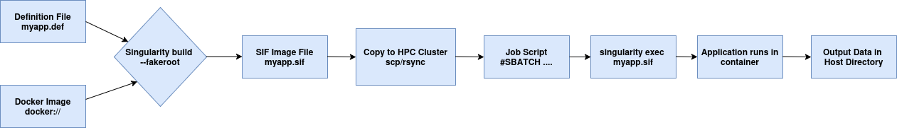

|
Research
WCET Analysis
|
|
Proposed ESOMICS
We propose a novel scheme called ESOMICS, to obtain the appropriate values of WCETopt for HC tasks to improve QoS and utilization while reducing the number of mode switches. In this scheme, we propose a Machine-Learning (ML)-based approach (which can be generalized to any embedded application) to determine the appropriate value of WCETopt . This scheme evaluates the
model functionality and performance based on the generated data sets to train and validate different prediction techniques. This proposed ML model is utilized in MC systems to obtain WCETopt for any application, to improve resource utilization and QoS, while reducing the number of mode switches, compared to state-of-the-art research works. To the best of our knowledge, this is the first work that obtains WCETopt, utilizing ML models while guaranteeing real-timeliness, improving the QoS, and reducing the mode switches with no timing overhead at run-time.
|
Singularity
|

|
Singularity, also known as Apptainer, is a container platform specifically designed for High-Performance Computing
(HPC) and research environments. Its primary purpose is to enable reproducible, portable, and secure software
deployment. It packages software, libraries, and data into a single, immutable file, solving the "dependency hell"
problem and ensuring that computations run identically across different systems. In this work, we had to execute the
applications on BSC supercomputer Marenostrum5 (MN5) or any cluster whihc doesnt allow sudo access. The problem is
without sudo access the users cannot instal libraries and dependencies to run their applications sucessfully. The
solution is to wrap everything into one container and execute successfully on it.
|
|